Визуализация магнитных
полей с использованием железных опилок
(магнитное сканирование)
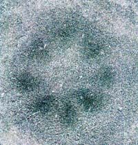
Для изучения топографии магнитных полей многополюсных магнитов могут быть использованы устройства типа простого поворотного столика [5] в совокупности с тесламетром [6] или установки на основе станков с двух- или трехкоординатной подачей [7, 8]. Однако исследование одного магнита с их помощью занимает достаточно много времени. Бывают случаи, когда нет необходимости точно измерять распределение магнитного поля, а требуется приблизительно, но быстро оценить качество намагничивания или, например, определить количество полюсов магнита. Иногда предварительные сведения о распределении силовых линий магнитного поля позволяют построить более рациональную методику дальнейших точных измерений. Одним из давно известных способов визуализации достаточно сильных магнитных полей (с магнитной индукцией порядка десяти миллитесла и более) является использование железных опилок. Полученное изображение силовых линий магнитного поля может быть затем просканировано и обработано на компьютере. Сочетание простейшего способа визуализации силовых линий магнитного поля с возможностями компьютерной техники дает в примитивном виде технологию магнитного сканирования.
Для опробования вышеописанной технологии был изготовлен супервизор, показанный на рис. 1. Супервизор представляет из себя пакет из листов оргстекла (полиметилметакрилат) и белого поливинилхлорида, разделенных тонкой картонной прокладкой и стянутых винтами. Внутрь помещаются опилки, получающиеся, например, при обработке стали резанием с помощью углошлифовальной машины. С помощью встряхивания опилки равномерно распределяются по той поверхности супервизора (непрозрачной), на которую помещается изучаемый магнит. Другой поверхностью (прозрачной) супервизор устанавливается на стекло сканера.
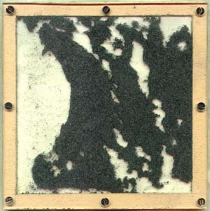
Рис. 1. Супервизор для визуализации магнитного поля (размеры 150 х 150 мм2).
Была проверена возможность визуализации магнитных полей кольцевых магнитов (типоразмер К60 х 24 х 9, материал - феррит бария), намагниченных различными способами. Для намагничивания использовался электромагнит [4] с блоком питания [1], а также установки импульсного намагничивания [9], укомплектованные генератором мощных импульсов тока [2, 3] и намагничивающими устройствами [10 , 11]. Обработка полученных изображений производилась с использованием программы PhotoShop 5.0. Применялись функции настройки яркости, контраста и фильтр "гаусс-размытие" в различных комбинациях. Результаты приведены на рис. 2 - 4. Исходные изображения (левые в последовательности), почти не несущие зрительной информации, удалось привести к виду, по которому вполне можно делать выводы о количестве полюсов магнита, качестве намагничивания, распределении магнитного поля. Например, можно сделать предположение, что магнитное поле кольцевого магнита, намагниченного в осевом направлении (рис. 2), имеет точку инверсии на оси симметрии (что и соответствует действительности).
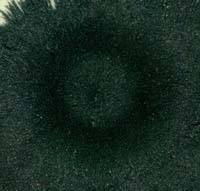
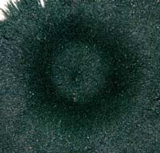
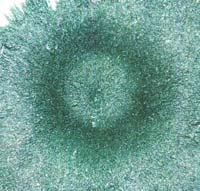
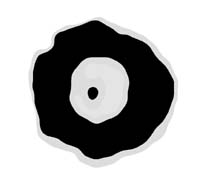
Рис. 2. Визуализация магнитного поля кольца (феррит бария), намагниченного в осевом направлении [4].
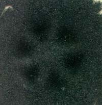
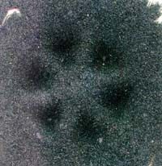
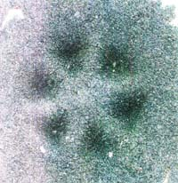
Рис. 3. Визуализация магнитного поля кольца (феррит бария), намагниченного 6-полюсно в осевом направлении [10].
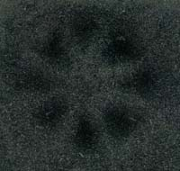
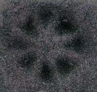
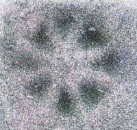
Рис. 4. Визуализация магнитного поля кольца (феррит бария), намагниченного 8-полюсно в осевом направлении [11].
Применение технологии магнитного сканирования в таком виде, вообще говоря, было направлено не только на решение практических задач, помимо прочего эти работы давали отправной толчок к дальнейшим размышлениям о построении более совершенных систем магнитного супервидения.
Ссылки:
29.10.2004
09.09.2005
23.06.2010
Альтернативные источники
энергии
Компьютеры и
Интернет
Магнитные поля
Механотронные системы
Перспективные
разработки
Электроника и
технология